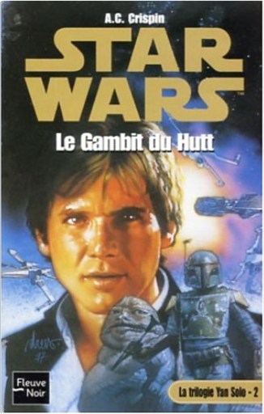
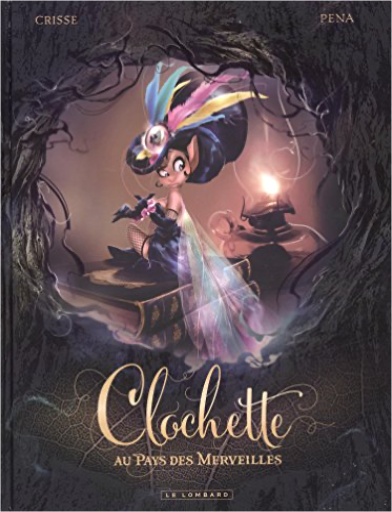
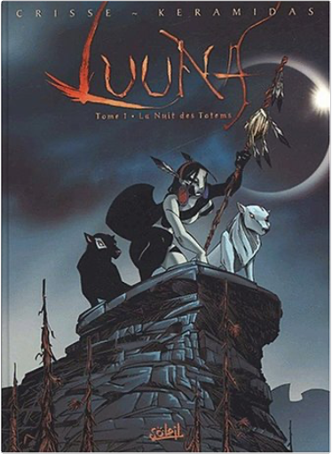
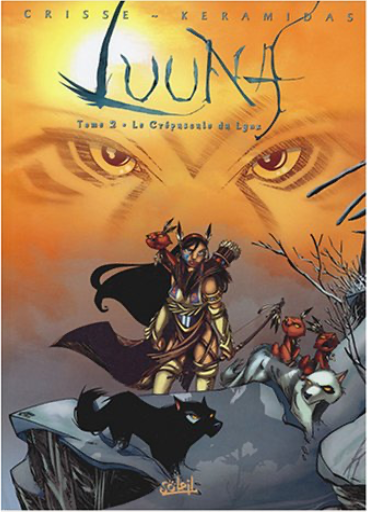
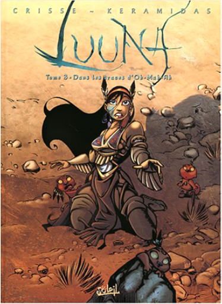
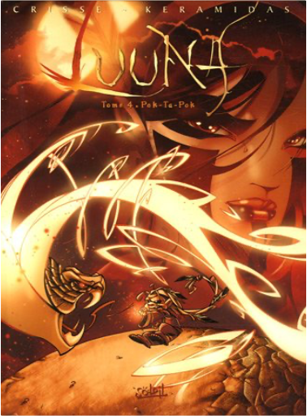
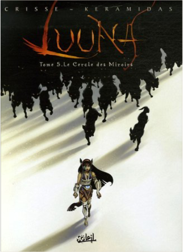
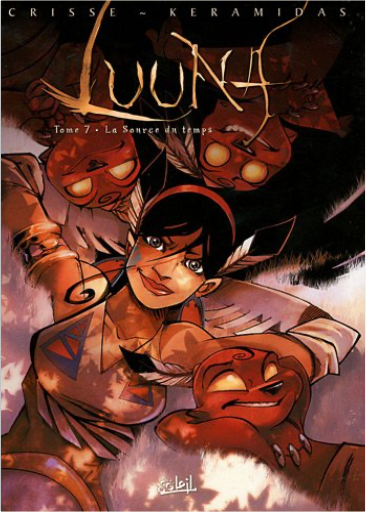
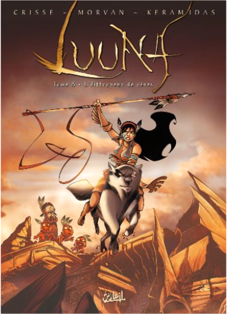
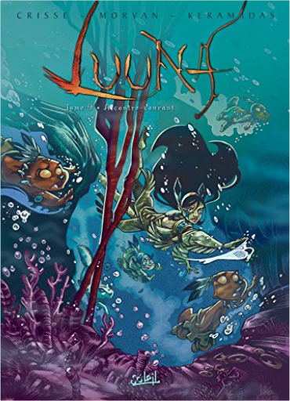

Books
Movies
Albums
Videogames
Games
BD
BD Camille
Blu-ray
Business
Camille
Comics
Cooking
Lego
Manga
Pauline
Photography
Star Wars
T'choupi
Travel
TV Shows
Un livre dont vous êtes le héro
Vinyl
Walt Disney
22
23
24
25
26

star wars, tome 32 : la trilogie yan solo, partie 2, le gambit du hutt
a.c. crispin
star wars, tome 34 - la trilogie yan solo, partie 3, l'aube de la rébellion
a.c. crispin
5

clochette au pays des merveilles
crisse

luuna, tome 1 : la nuit des totems
crisse, keramidas
5

luuna, tome 2 : le crépuscule du lynx
crisse, keramidas
4

luuna, tome 3 : dans les traces d'oh-mah-ah
crisse, keramidas

luuna, tome 4 : pok-ta-pok
crisse, keramidas
2

luuna, tome 5 : le cercle des miroirs
crisse, keramidas
luuna, tome 6 : la reine des loups
crisse, keramidas

luuna, tome 7 : la source du temps
crisse, keramidas

luuna, tome 8 - l'attrapeur de rêves
crisse, keramidas

luuna, tome 9 : à contre-courant
crisse, keramidas
22
23
24
25
26


 Made with Delicious Library Made with Delicious Library
Made with Delicious Library Made with Delicious Library